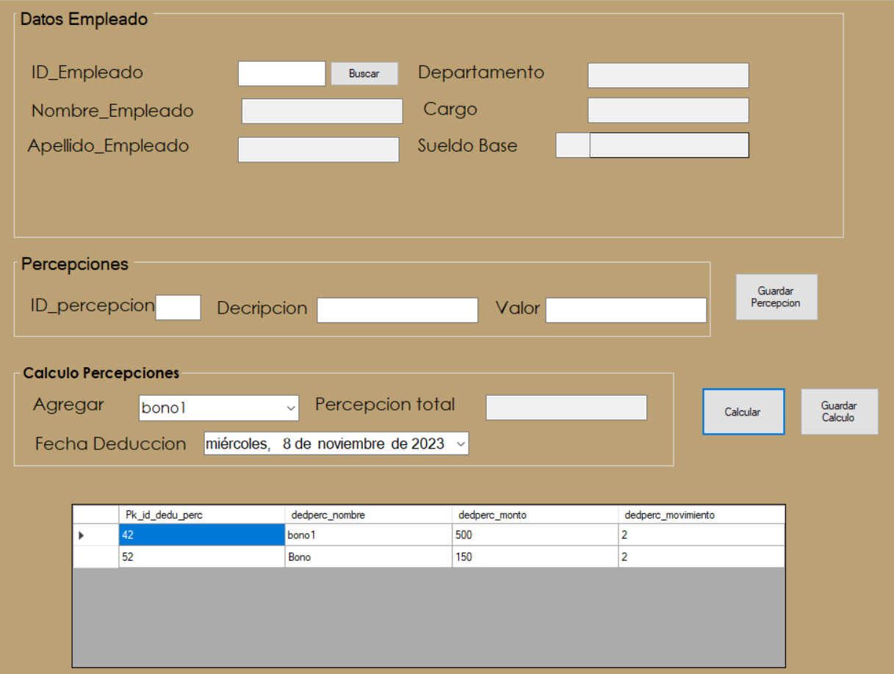
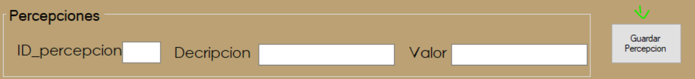
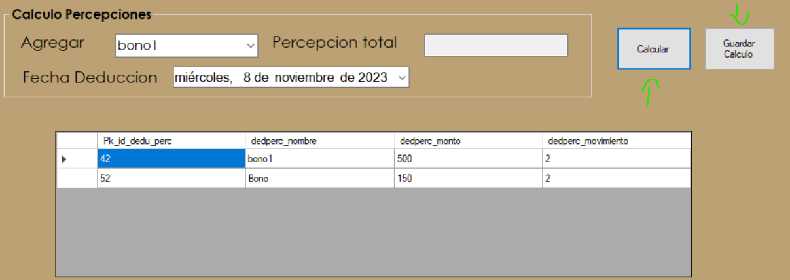

Ayuda Percepcion Nominas


El proceso de percepciones se refiere a la determinación y el cálculo de los ingresos que un empleado gana por su trabajo.
En este apartado se puede buscar al empleado que se desea aplicar la Percepcion se obtiene sus datos personales como el departamento al que pertenece y su salario.

En este apartado se puede introducir el valor del id de la percepcion que queramos se incluye una descripcion y el valor de la percepcion, para terminar se debe oprimir el boton de "Guardar Deduccion" y se guardara la percepcion en la base de datos.
En este apartado es donde se realiza la suma del total de percepciones a aplicar al empleado, en "Descontar" se desplegaran varias opciones de percepciones disponibles, en "percepciones Total" va a ir apareciendo el total a deducir al empleado, cada vez que se le de al boton calcular se ira sumando la percepciones total una vez estemos seguros podemos presionar el boton de Guardar Calculo para guardar la percepciones.
